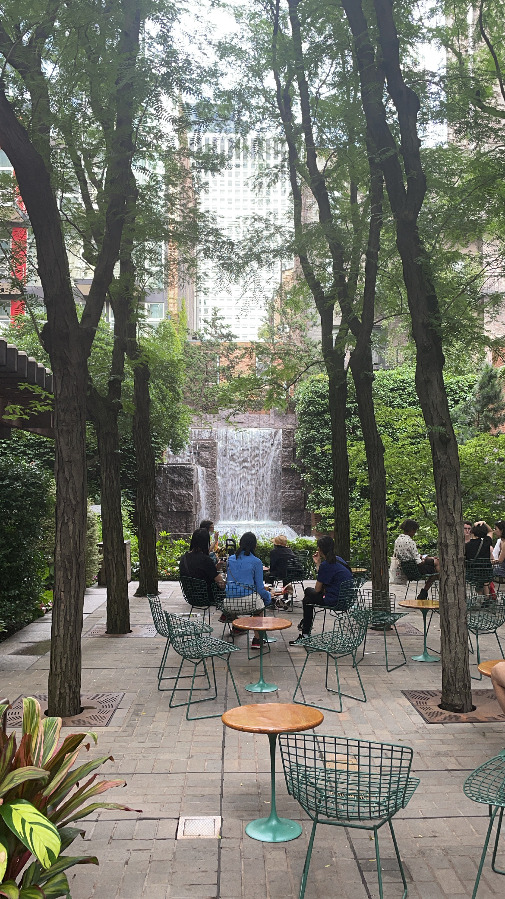

Restaurants By Location in Manhattan

Soho
- Sola Pasta Bar
- Jack's Wife Freida
- Laudree
- Rubirosa
- Kimika
- Balthazaar
- Bar Pitti
- Levain Bakery
- Bar Primi

Upper East Side
- J.G. Melon
- UpThai
- Mission Ceviche
- Cafe Buon Gusto
- The Smith
- Bua Thai Ramen
- JoJo
- Uva
- The Penrose

Midtown
- GupShup
- Le Bernardin
- Aquavit
- Ophelia Lounge
- Kochi
- Indian Accent
- Hala Guys
- ilili/li>
- Omar's
Lower East Side
- Rebèl
- Kiki’s
- Dhamaka
- Jia NYC
- Ippudo
- Mughlai Grill
- Beauty and Essex
- Jajaja
- Clinton St Baking Company